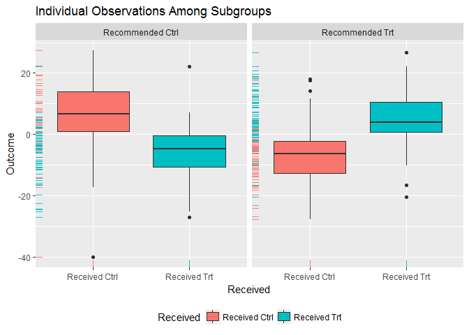

Introduction to the ‘personalized’ package
The personalized package provides estimation methods for subgroup identification under the framework of Chen et al (2017)
Install using the devtools package:
devtools::install_github("jaredhuling/personalized")or by cloning and building using R CMD INSTALL
Quick Usage Reference
Load the package and access help files for the main functions:
library(personalized)?fit.subgroup
?validate.subgroupset.seed(123)
n.obs <- 250
n.vars <- 1000
x <- matrix(rnorm(n.obs * n.vars, sd = 3), n.obs, n.vars)
# simulate non-randomized treatment
xbetat <- 0.5 + 0.5 * x[,21] - 0.5 * x[,41] + 0.5 * x[,1] * x[,12]
trt.prob <- exp(xbetat) / (1 + exp(xbetat))
trt01 <- rbinom(n.obs, 1, prob = trt.prob)
trt <- 2 * trt01 - 1
# simulate response
delta <- (0.5 + x[,2] - x[,3] - x[,11])
xbeta <- x[,1] + x[,11] - 0.5 * x[,12]^2 + x[,13] + 0.5 * x[,15] ^ 2
xbeta <- xbeta + delta * trt
# continuous outcomes
y <- drop(xbeta) + rnorm(n.obs, sd = 2)
# create function for fitting propensity score model
prop.func <- function(x, trt)
{
# fit propensity score model
propens.model <- cv.glmnet(y = trt,
x = x, family = "binomial")
# return predicted Pr(trt = 1 | X = x)
pi.x <- predict(propens.model, s = "lambda.min",
newx = x, type = "response")[,1]
pi.x
}
subgrp.model <- fit.subgroup(x = x, y = y,
trt = trt01,
propensity.func = prop.func,
method = "a_learning",
loss = "sq_loss_lasso",
nfolds = 10) # option for cv.glmnet
summary(subgrp.model)## family: gaussian
## loss: sq_loss_lasso
## method: a_learning
##
## Average Outcomes:
## Recommended Trt Recommended Ctrl
## Received Trt 5.2193 (n = 73) -5.9879 (n = 69)
## Received Ctrl -6.8308 (n = 70) 5.7565 (n = 38)
##
## Trt Effect Among Recommended Trt Ctrl Effect Among Recommended Ctrl
## 12.0501 (n = 143) 11.7444 (n = 107)
##
## Benefit score quantiles:
## 0% 25% 50% 75% 100%
## -20.187 -5.491 1.821 7.587 21.276
##
## 24 variables selected by the lasso (cross validation criterion).
##
## Estimate
## V2 1.176672910
## V3 -1.677310716
## V6 0.557432561
## V11 -1.295443491
## V24 0.172071675
## V145 -0.161864923
## V197 0.129665339
## V298 0.159134624
## V336 0.038150991
## V349 -0.005098594
## V431 -0.148129193
## V508 -0.003919389
## V512 -0.172885742
## V540 0.115712326
## V555 -0.110480828
## V600 -0.492156891
## V603 -0.144105401
## V644 0.148491828
## V707 -0.459510002
## V768 0.136137419
## V828 0.806748213
## V950 0.071287675
## V953 -0.180628947
## V971 -0.003399006plot(subgrp.model)